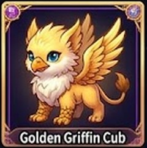
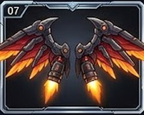
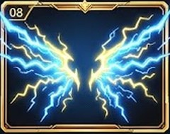
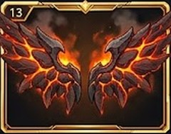

🙋 第十五次：請老師選 10 題
老師的話已經寫進需求檔。下面 10 題有兩種意思、或跟以前的規則衝突，老師回答以後才動手。綠框 ＝ 我建議的。
回答方式：例「1C 2A 3A 4C 5B 6A 7A 8甲 9A 10A」。
回答方式：例「1C 2A 3A 4C 5B 6A 7A 8甲 9A 10A」。
1戰士、寵物「活起來」怎麼做？（第 1、3 點）
現在的戰士、寵物是一張一張不會動的圖。要「眨眼、微笑、揮武器、撒嬌依偎」有兩條路：


A用現在的圖做：我一張一張找出眼睛、手、武器的位置 ➜ 眨眼、眼睛閃光、呼吸起伏、身體往前衝、武器揮出去、寵物眨眼微笑跳過去蹭戰士、戰士摸摸寵物。
缺點：眨眼是把眼皮「畫上去」，近看會有一點像貼紙，不像卡通影片那麼真。
B老師用 AI 影片工具，把每一張圖做成會動的短影片（約 5 秒，眨眼、揮武器），傳給我放進去。
最逼真；但老師要做 戰士 60 支＋寵物 30 支。
C先做 A；老師哪一天做好 B 的影片，傳一支我就換一支。建議
2「震撼的音效」放在哪裡？（第 1、3 點）
以前老師決定：現場任務「沒有音樂音效」（大螢幕只唸正確答案、平板不出聲）。這一次老師要武器、寵物有聲音 ➜ 兩個規則衝突。
A只在〔戰神之路〕這一頁＋在家練習做完最後一幕（打怪）有音效；右上角〔🔊 音效 開／關〕。現場任務照舊沒有音效。建議
BA ＋ 現場任務的大螢幕也有（平板照舊不出聲）。
C全部都有（連學生平板的現場任務也出聲）。
3寵物專屬的聲音用哪一種？
A電腦做出來的可愛叫聲：每一隻不一樣（小龍 ＝ 小小的吼、貓 ＝ 喵、鳳凰 ＝ 鳥叫、機器寵物 ＝ 嗶嗶）。沒有版權問題，離線也有聲音。建議
B真的動物錄音（要找免費可以用的錄音；龍、獨角獸、機器貓這些神獸沒有真的聲音，只能用相近的動物）。
4「全部合體、核彈級大招」的最終成果畫面放在哪裡？（第 3 點）
A戰神之路大方框下面一顆〔🌟 全部 合體 出招！〕：按一下 ＝ 全螢幕約 8 秒：背景 ➜ 戰士 ➜ 披風、光環、翅膀 ➜ 坐騎 ➜ 寵物 一樣一樣登場合體 ➜ 武器專屬大招 ➜ 核彈級爆發 ➜「合體 威力 320」。
B每一次在家練習做完，最後一幕也自動演一次（每一次多 8 秒）。
CA ＋ 買到新東西、戴上新東西的時候自動演一次（平常做完練習不演，不拖時間）。建議
5收集寶物「真實的幫助」：只演清楚，還是再加新的？（第 4、7 點）
現在真的有的幫助：⚔ 武器、寵物、寶物 ➜ 戰力 變高 ➜ 打怪、打魔王 一下 愈痛（10 ～ 30）；🐾 寵物 跟著 打 一下、現場任務 🛡 寵物護盾 一場 一次。
以前老師決定：買到的東西不加分數、不讓題目變簡單（公平）。
以前老師決定：買到的東西不加分數、不讓題目變簡單（公平）。
A只把上面這些用動畫演清楚，不加新規則。
BA ＋ 加「⚔ 戰力 階級」：戰力到 300 ＝ 🥉 青銅戰士、600 ＝ 🥈 白銀、1000 ＝ 🥇 黃金、1500 ＝ 💎 鑽石、2200 ＝ 👑 傳說；階級徽章顯示在現場任務名字旁邊、排行榜名字旁邊（地位）；每升一階 🪙＋100 一次。還是不加分數、不改題目。建議
要改伺服器 ➜ 要重新部署。
6現場任務「答對 ✖2」怎麼算？（第 5 點）
現在：現場任務答對 不給金幣；經驗值只有「那一天第一次練 ⭐＋20」。在家練習：第一次就答對 1 題 🪙＋1；一天最多 🪙 100。
A現場任務每答對 1 題 ＝ 🪙＋2、⭐＋2（在家的 2 倍）；一直都是 ✖2，老師不用多按；不算進「一天最多 100」。大螢幕、平板寫「⚡ 現場任務 ✖2」。建議
B跟 A 一樣，但算進「一天最多 100」。
C老師開場時多一顆〔✖2 開／關〕，開了才 ✖2。
要改伺服器 ➜ 要重新部署。
7「鸚鵡神獸」「史詩級翅膀」是哪兩樣？（第 9 點，截圖我沒有收到）

（現在 ⏳ 10/31 下架）
（現在一直都有）

（現在 ⏳ 10/31 下架）
A甲 金色獅鷲寶寶 ＋ 噴射翅膀（就是現在 10/31 下架的那兩樣）。建議
B乙 水晶鳳凰寶寶 ＋ 噴射翅膀。
8換成哪兩樣？（第 9 點）
換下來的兩樣變回一般商品（一直都買得到）。第 8 點：💥 必殺 s0301 金龍 ➜ ⏳ 10/31 下架（這一題不用選）。
10/31 還有 11 天，一天最多賺 🪙 100。
10/31 還有 11 天，一天最多賺 🪙 100。
🪙 500・Lv 1
甲10/31 以前認真的學生換得到的最酷的：建議
s0804 星空小龍
🪙 500・Lv 1 s0908 雷電翅膀
🪙 1,200・Lv 5
🪙 500・Lv 1

🪙 1,200・Lv 5
乙最稀有的（第 3 排 ★★★★）：10/31 以前幾乎沒有學生換得到（要 🪙 2,500、Lv 10）。
s0813 太陽鳳凰帝王
🪙 2,500・Lv 10 s0913 熔岩惡魔翅膀
🪙 2,500・Lv 10
🪙 2,500・Lv 10

🪙 2,500・Lv 10
丙老師自己挑：寫號碼（例：s0807、s0909）。
9「進步 🔥 保持滿分」看不懂（第 10 點）
意思：這一組 上一次 100 分、這一次 也 100 分 ➜ 已經滿分，沒辦法再進步幾 %，所以寫「保持滿分」。在老師看板的個人表「進步」那一欄、成績卡。
A改成「💯 ➜ 💯 兩次 都 100」。建議
B改成「🔥 連續 滿分」。
C照舊，旁邊加〔❓〕點了才看說明。
10👑 冠軍寶箱有沒有期限？（第 11 點）
現在：「本週」＝ 星期一 ～ 星期日（這一週 10/19（一）～ 10/25（日））的練習時間排名；老師每週按一次〔發〕；學生拿到的寶箱沒有期限，什麼時候開都可以。
A照現在：寶箱沒有期限；老師看板那一行改寫「本週：10/19（一）～ 10/25（日）」讓老師一看就懂。建議
B寶箱要在下一個星期日以前打開，不然就不見了（畫面寫「⏳ 還有 N 天」）。
📷 另外：舊的 10 種寶物圖（一張 5 ✕ 2）還沒有收到，請老師拖進對話。
第 2、6 點（看不懂的說明動畫）沒有兩種意思，回答以後一起做。
第 2、6 點（看不懂的說明動畫）沒有兩種意思，回答以後一起做。